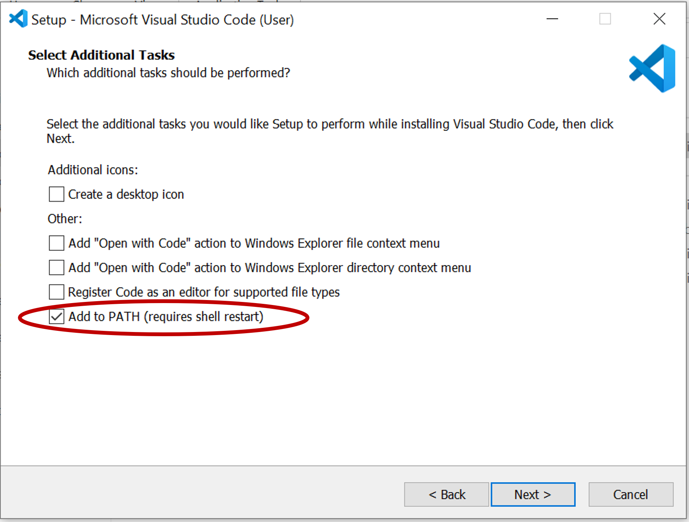
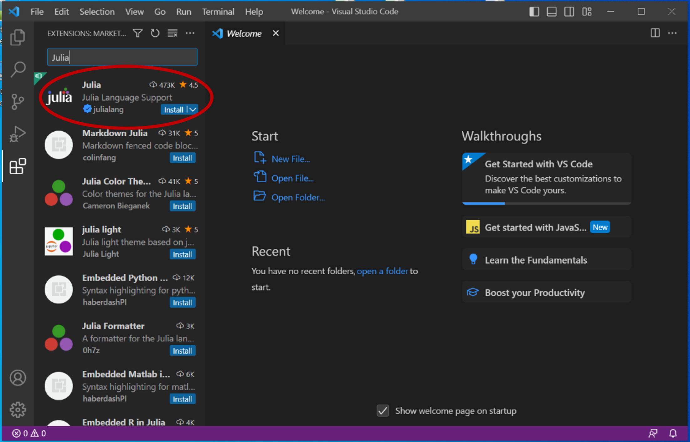

Installation Guide
This page proposes a step by step installation guide to use the OptiPlantPtX tool.
In short:
- Fork the repository
- Clone the repository to your local machine
- Open in VS Code
- Setup Julia Environment
Done! Try to run some of the examples
1. Fork the repository
Set up a GitHub account and sign-in. On the online repository, click on Fork > Create a new fork and name it as you wish i.e. OptiPlantPtX.
2. Clone the repository to your local machine
Install a Git client (choose one you’re comfortable with):
- GitHub Desktop (recommended for beginners)
- Git
Steps (with GitHub Desktop):
- On the OptiPlantPtX repository that you forked, click on the green "<> Code" button, go to HTTPS and copy the URL
- In GitHub desktop, go to
File > Clone repository - Go in the URL tab and paste the OptiPlant repository URL
- Choose the path to clone the repository locally: installing on a Drive may cause problems!
3. Open in VS Code
Download and install Visual Studio Code. Make sure to select the "Add to PATH" option when installing.

- Open VS Code
- Go to
File > Open Folder→ select yourOptiPlantPtXfolder
4. Setup Julia Environment
Make sure you have the latest Julia version installed: Install Julia.
- Add the Julia extension in VS Code using the "Extensions: Marketplace" (access on the square icon on left sidebar of VS Code)

- Open the Julia REPL inside VS Code (the first time opening can take a bit of time):
- Option 1, keyboard shortcut: Press
Alt + JthenAlt + O - Option 2, open the command palette (
Ctrl+Shift+P) and run:Julia: Start REPL
- Option 1, keyboard shortcut: Press
This is now a condensed version of the Julia documentation to use someone else's project.
In the REPL, run this comand to move one directory up (where the folder where
OptiPlantPtXis located):cd("..")Press
]to enter the package managerTo set up the environment write:
activate OptiPlantPtXIf your folder is called differently i.e. "MyOptiPlant" write
activate MyOptiPlantThen write:
instantiateTo use Gurobi as a solver, you need to install the software and activate your license using the grbgetkey. Overtime, you may need to update Gurobi to the latest version and re-generate your license to avoid license compatibility issues.
Done! You can exit the package manager pressing the
Backspace keyand start running the examples.